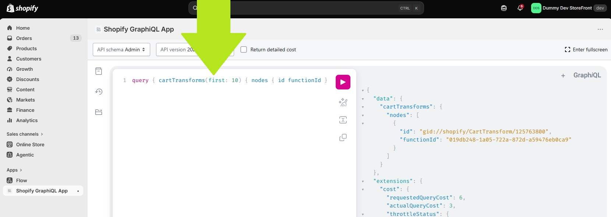

Merchant CartTransform Update
Update CartTransform With "Block On Failure"
Open The Shopify GraphiQL App:
- In Shopify, under Apps, you should have "Shopify GraphiQL App" installed, if not:
- Go to https://shopify-graphiql-app.shopifycloud.com/login.
- Check both "cart_transforms" checkboxes, read and write (near the top left).
- In the "Shop URL" field, enter "makersuppliesau" (near the top)
- Click "Install" (near the top).
- You should be automatically redirected you to your store, to confirm data access - click "Install".
- You should be automatically redirected to the Shopify GraphiQL App interface.
- Open Shopify GraphiQL App if it isn't already displayed.

- In the Shopify GraphiQL App text area (top left of the app interface area), enter the
following (replacing all existing text):
query { cartTransforms(first: 10) { nodes { id functionId } } }
- Run this query using the pink "Play" button in the center top of the app page.
- In the results on the right, note the "id" and "functionId" of the only result, it should look something like this:
- If there are multiple results under "cartTransforms" (excluding the "extensions" information), stop.
{
"data": {
"cartTransforms": {
"nodes": [
{
"id": "gid://shopify/CartTransform/125763800", <-- copy this
"functionId": "019db248-1a05-722a-872d-a59476eb0ca9" <-- copy this
}
]
}
},
- Copy the "id" value, it should look something like this: "gid://shopify/CartTransform/125534424"
- Copy the "functionId" value, it should look something like this: "019db248-1a05-722a-872d-a59476eb0ca9"
- Now, in the text area that currently has the query text you just entered (top left of the
app interface area),
enter the following (replacing all existing text):
- (Be sure to replace the id in the following query with the id you just copied)
mutation { cartTransformDelete(id: "gid://shopify/CartTransform/125534424") { userErrors { field message } } }
- Again, run this query using the pink "Play" button in the center top of the app page.
- You should get results similar to the following:
{
"data": {
"cartTransformDelete": {
"userErrors": []
}
},
"extensions": {
...
- Now, in the text area that currently has the query text you just entered (top left of the
app interface area),
enter the following (replacing all existing text):
- (Be sure to replace the functionId in the following query with the functionId you copied in a previous step)
mutation { cartTransformCreate(blockOnFailure: true, functionId: "019db248-1a05-722a-872d-a59476eb0ca9") { cartTransform { id functionId } userErrors { field message } } }
- Again, run this query using the pink "Play" button in the center top of the app page.
- You should get results similar to the following:
{
"data": {
"cartTransformCreate": {
"cartTransform": {
"id": "gid://shopify/CartTransform/125796568",
"functionId": "019db248-1a05-722a-872d-a59476eb0ca9"
},
"userErrors": []
}
},
"extensions": {
...